Navaratri Golu 2026 · Journey Home
The soul’s journey to the lotus feet of Sriman Narayana
Malai Nadu Divya Desam
The thirteen sacred Perumāl temples of Kerala and the far south, in order of the pilgrimage route, from the far south to the north. Tap a number to jump to a temple, then press play to listen.
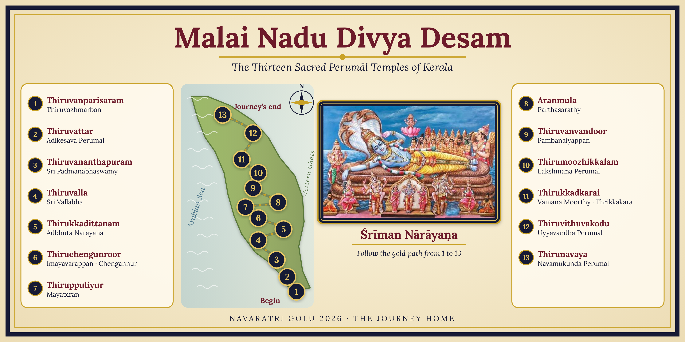
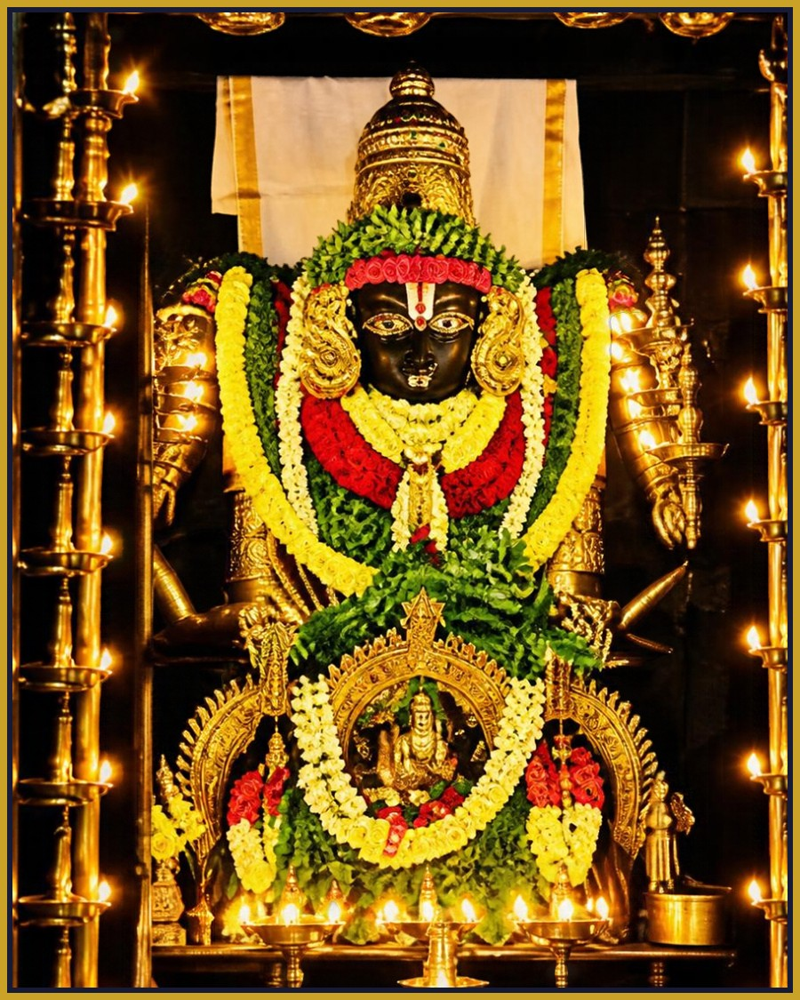
Thiruvazhmarban · Kanyakumari
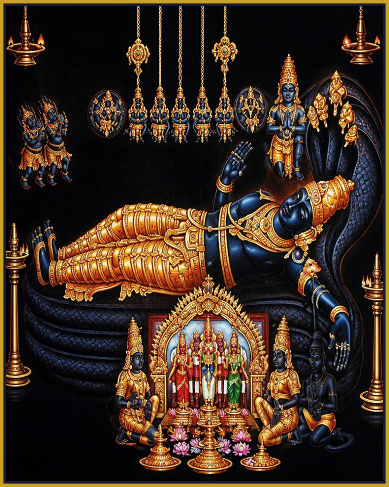
Adikesava Perumal · Kanyakumari
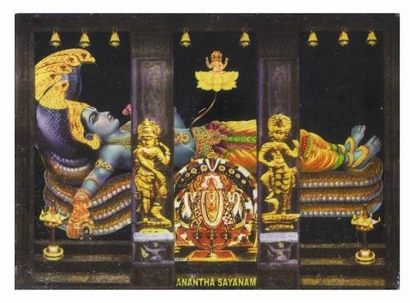
Sri Padmanabhaswamy · Thiruvananthapuram
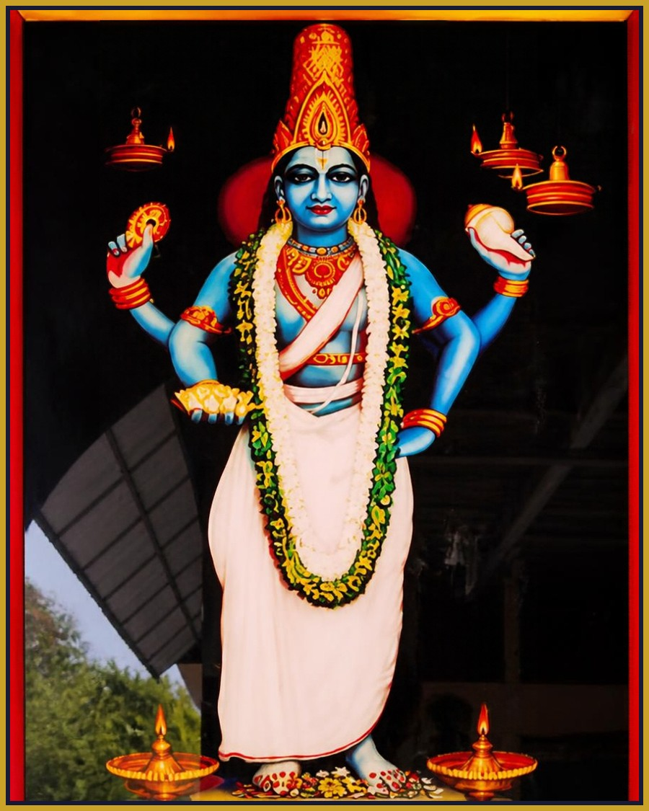
Sri Vallabha (Kolapiran) · Pathanamthitta
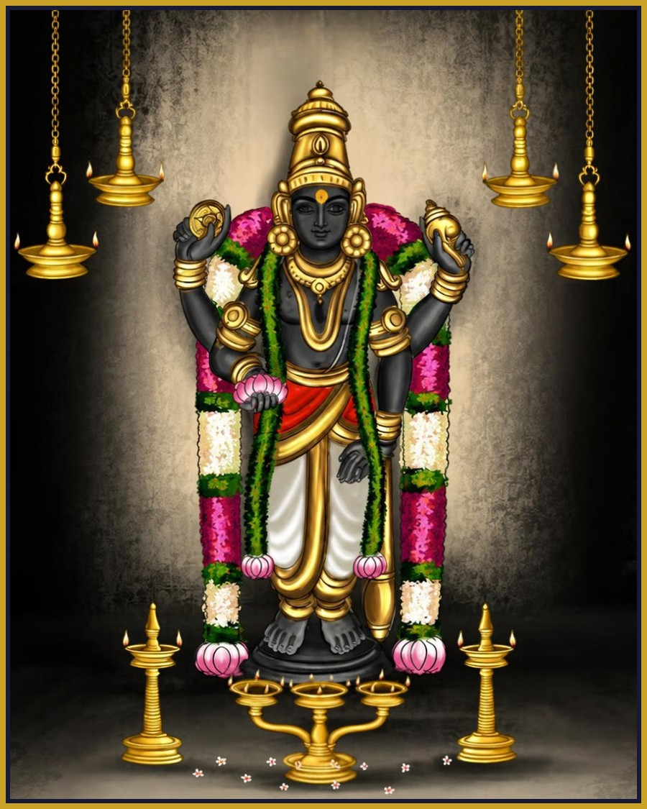
Adbhuta Narayana Perumal · Kottayam
Imayavarappan · Alappuzha
Mayapiran · Kuttanad, Alappuzha
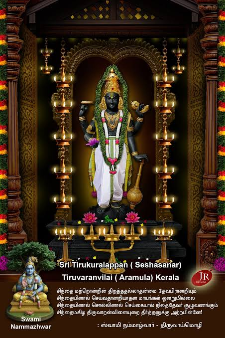
Parthasarathy · Pathanamthitta
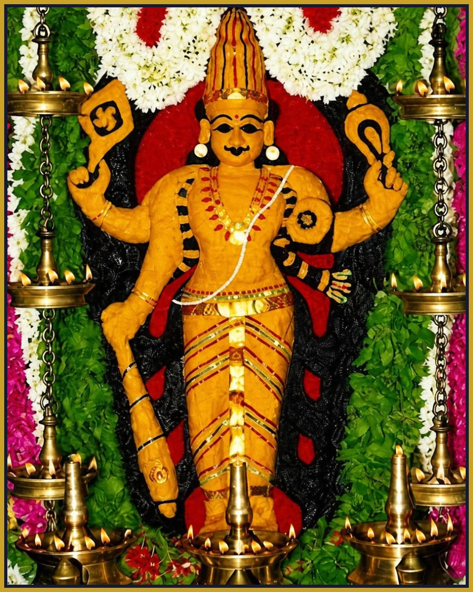
Pambanaiyappan · Alappuzha
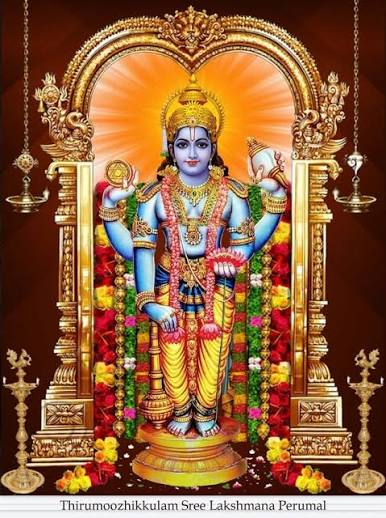
Lakshmana Perumal · Ernakulam
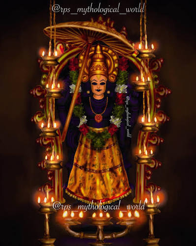
Vamana Moorthy · Ernakulam
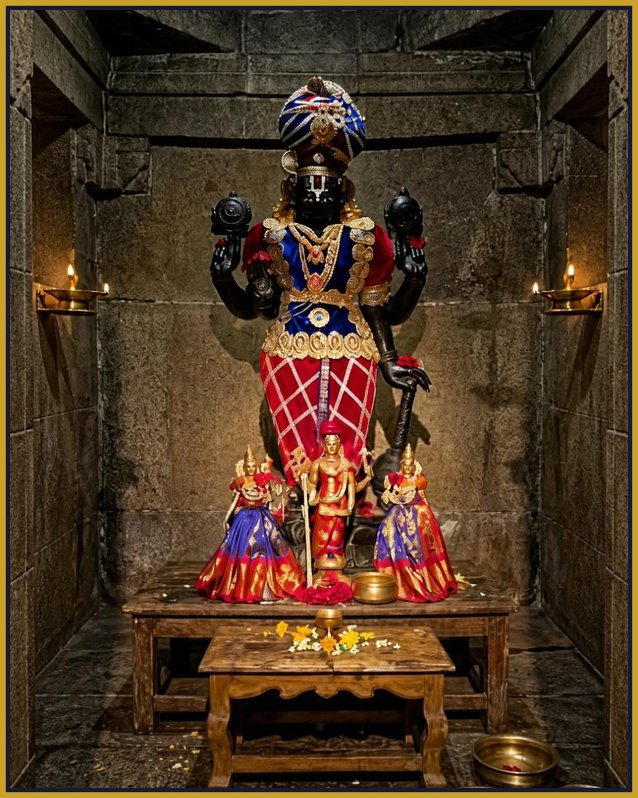
Uyyavandha Perumal · Palakkad
Navamukunda Perumal · Malappuram